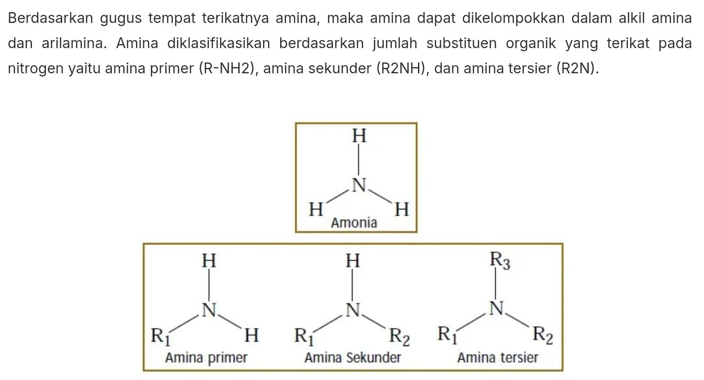
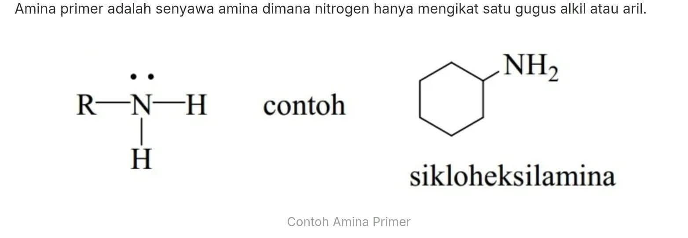
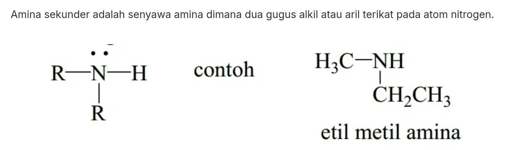
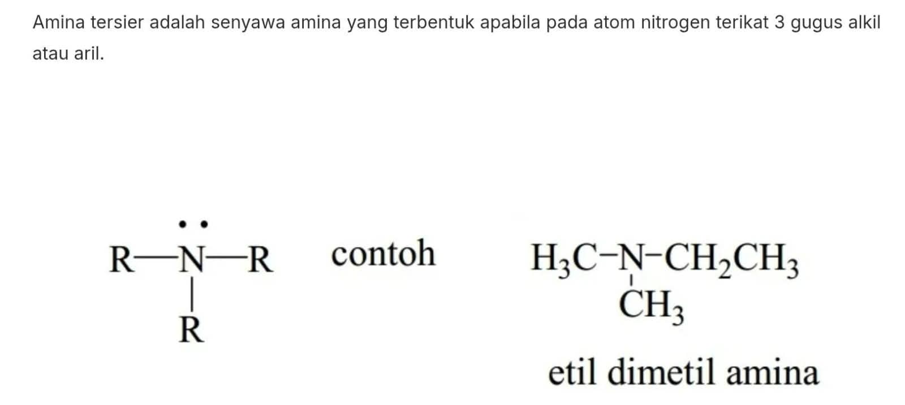
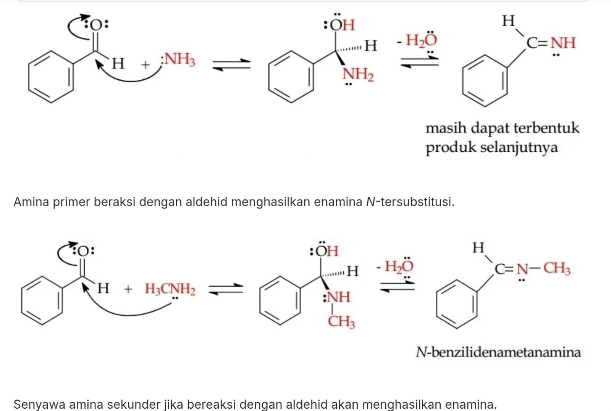
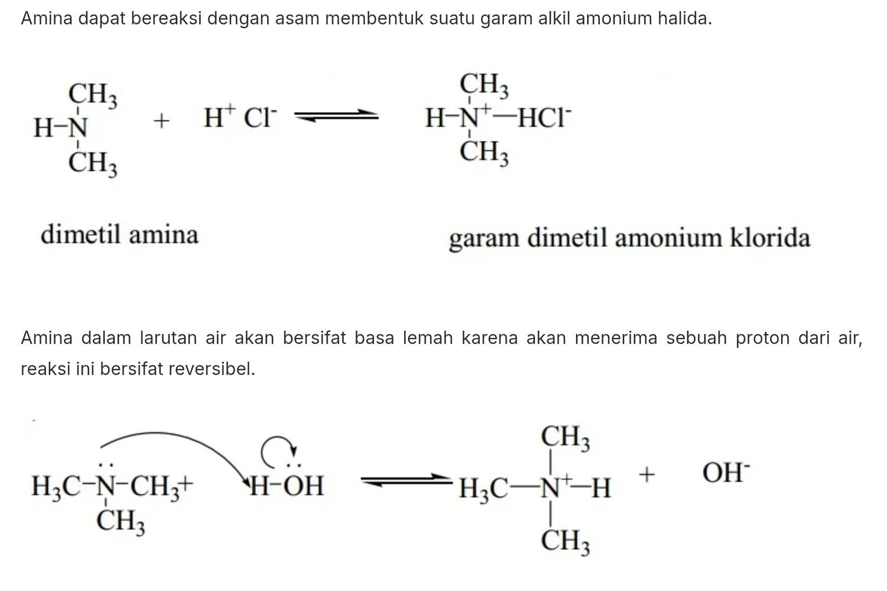

Klasifikasi Umum Amina
Berdasarkan gugus tempat terikatnya amina, maka amina dapat dikelompokkan dalam alkil amina dan arilamina[cite: 2].
Amina diklasifikasikan berdasarkan jumlah substituen organik yang terikat pada nitrogen yaitu amina primer (R-NH2), amina sekunder (R2NH), dan amina tersier (R2N)[cite: 2].

Amina Primer
Amina primer adalah senyawa amina dimana nitrogen hanya mengikat satu gugus alkil atau aril[cite: 4].
Salah satu contoh dari amina primer adalah senyawa sikloheksilamina[cite: 4].

Amina Sekunder
Amina sekunder adalah senyawa amina dimana dua gugus alkil atau aril terikat pada atom nitrogen[cite: 3].
Contoh molekul yang tergolong sebagai amina sekunder adalah etil metil amina[cite: 3].

Amina Tersier
Amina tersier adalah senyawa amina yang terbentuk apabila pada atom nitrogen terikat 3 gugus alkil atau aril[cite: 5].
Sebagai contoh strukturnya, terdapat pada senyawa etil dimetil amina[cite: 5].

Reaksi Asam & Basa
Amina dapat bereaksi dengan asam membentuk suatu garam alkil amonium halida[cite: 7]. Contohnya, dimetil amina berubah menjadi garam dimetil amonium klorida[cite: 7].
Amina dalam larutan air akan bersifat basa lemah karena akan menerima sebuah proton dari air, reaksi ini bersifat reversibel[cite: 7].

Reaksi dengan Aldehid
Amina primer beraksi dengan aldehid menghasilkan enamina N-tersubstitusi[cite: 6].
Sementara itu, senyawa amina sekunder jika bereaksi dengan aldehid akan menghasilkan enamina (contohnya menghasilkan N-benzilidenametanamina)[cite: 6].